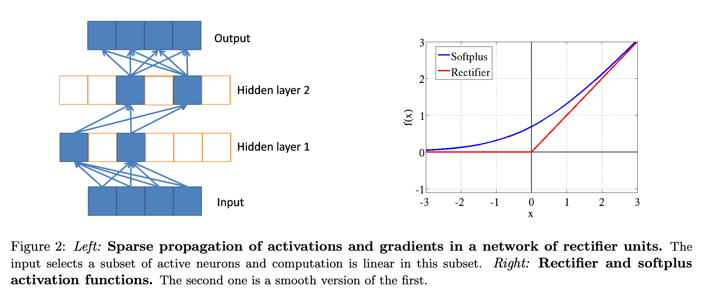

| author: | ishank-arora |
| score: | 9 / 10 |
-
What is the core idea?
-
First paper (I believe) to prove using rectifier function (\(max(0, x)\)) better than \(\textit{logistic sigmoid}\) or \(\textit{hyperbolic tangent}\) activation functions. Approaches this from the field of computational neuroscience.
-
Proposes the use of rectifying non-linearities as alternatives to the hyperbolic tangent or sigmoid in deep artificial neural networks, in addition to using an \(L_1\) regularizer on the activation values to promote sparsity and prevent potential numerical problems with unbounded activation.
-
Rectifier function brings together the fields of computational neuroscience and machine learning.
-
Rectifying neurons are a better model of biological neurons than hyperbolic tangenet networks.
-
There are gaps between computational neuroscience models and machine learning models. Two main gaps are:
- It’s estimated that about only 1-4% of neurons are active in the brain at the same time. Ordinary feedforward neural nets (without additional regularization such as an \(L_1\) penalty) do not have this property.
- Ex.: in the steady state, when employing the sigmoid activation function, all neurons fire are activated about 50% of the time. This is biologically implausible and hurts gradient-based optimization.
- Computational Neuroscience used Leaky Integrate-and-fire (LIF) activation function. Deep learning and neural networks literature most commonly used tanh and logisitc sigmoid. (see figure 1)

- It’s estimated that about only 1-4% of neurons are active in the brain at the same time. Ordinary feedforward neural nets (without additional regularization such as an \(L_1\) penalty) do not have this property.
-
Advantages of sparsity:
- Information disentangling.
- A claimed objective of deep learning algorithms (Bengio, 2009) is to disentangle the factors explainging the variations in the data.
- A dense representation is highly entangled - almost any change in the input modifies most of the entries in the representation vector.
- A sparse representation that is robust to small input changes, therefore, conserves the set of non-zero features.
- Efficient variable-size representation
- Different inputs may contain different amounts of information - this can then be reflected with varying amounts of sparsity as a result of the rectifier activation function.
- Linear separability
- More sparsity, more likely to be linearly separable simply because data is in represented in a high-dimensional space.
- Distributed but sparse
- Information is distributed amongst the non-zero values that if there is some noise and some values have to be discarded, information loss is low.
- Storing is easier, only have to store non-zero values and their locations.
- Information disentangling.
-
Disadvantages of sparsity:
- Too much sparsity may hurt “predictive performance for an equal number of neurons” as it reduces the “effective capaicty of the model.”

- Advantages of rectifier neurons:
- Allows network to easily obtain sparse representations
- Is more biologicially plausible
- Computations are also cheaper as sparsity can be exploited
- No gradient vainishing effect due to activation non-linearities of sigmoid or tanh units.
- Better gradient flow due on active neurons (where computation is linear - see figure 2)
- Allows network to easily obtain sparse representations
- Potential Problems:
- Hard saturation at 0 may hurt optimization
- Smooth version of rectifying non-linearity - \(softplus(x) = \log(1 + e^x)\) (see figure 2)
- loses exact sparsity but may hope to gain easier training
- Smooth version of rectifying non-linearity - \(softplus(x) = \log(1 + e^x)\) (see figure 2)
- Numerical problems due to unbounded behaviour of the activations
- Use the \(L_1\) penalty on the activation values - also promotes additional sparsity.
- Hard saturation at 0 may hurt optimization
-
-
How is it realized (technically)?
- Rectifier function is \(max(0, x)\).
- A smoother version: \(softplus(x) = \log(1 + e^x)\)
-
How well does the paper perform?
- Experiment results
- Sparsity does not hurt performance until around 85% of neurons are 0. (see figure 3)

- Rectifiers outperform softplus
- Rectifer outperforms tanh in image recognition.
- No improvement using pre-trained autoencoders - hence just using rectifier activation function is easier to use
- Experiment results
-
What interesting variants are explored?
- rectifier versus softplus
TL;DR
- rectifier activation function better than sigmoid and tanh activation functions
- sparsity is good - increases accuracy, computationally better performance, and representative of the biological neuron
- 50-80% sparsity for best generalising models, whereas the brain is hypothesized to have 95% to 99% sparsity.